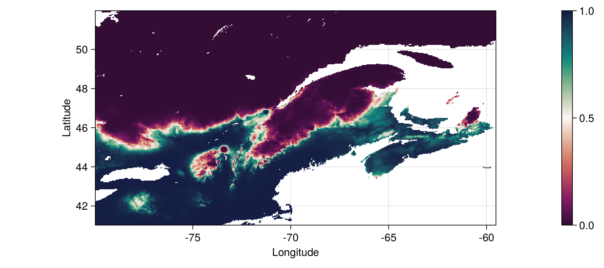
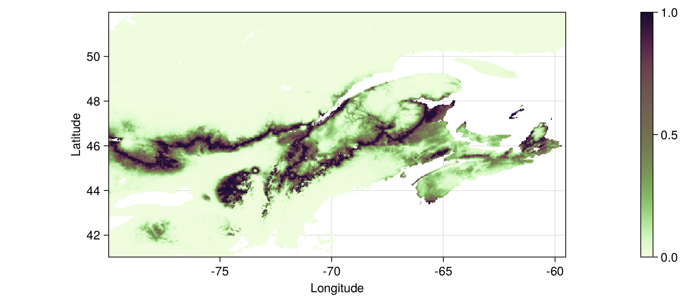
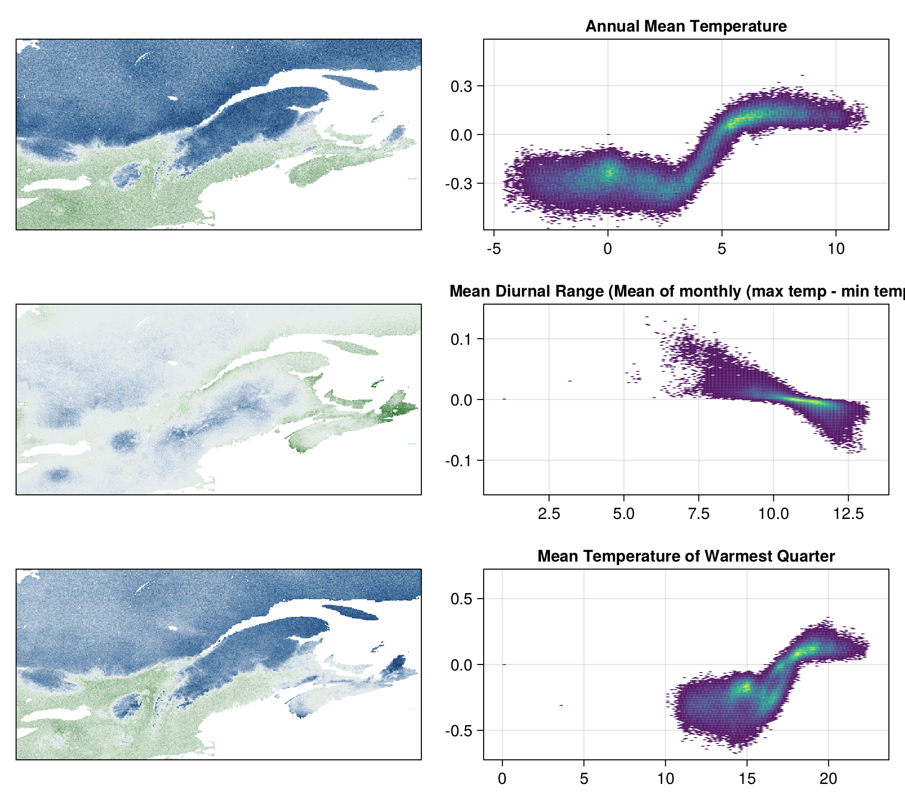

include(joinpath("code", "pkg.jl")); # Dependencies
include(joinpath("code", "nbc.jl")); # Naive Bayes Classifier
include(joinpath("code", "splitters.jl")); # Cross-validation
include(joinpath("code", "confusion.jl")); # Confusion matrix utilities
include(joinpath("code", "variableselection.jl")); # Variable selection
include(joinpath("code", "shapley.jl")); # Shapley valuesInterpretable Machine Learning
Answers that make sense, right out of the (black) box?
Overview
Build a simple classifier to predict the distribution of a species
Use this as an opportunity to talk about interpretable ML
Discuss which biases are appropriate in a predictive model
We care a lot about the
process
and only a little about the
product
Raccoons!
High volume of data
Species of concern for zoonotic diseases
Where can we find them in/around Québec?
Do try this at home!
To train a model, we need…
- A response variable \(y\)
-
presence or absence of a species at a location identified by its latitude and longitude
- A series of predictors \(\mathbf{x}\)
-
bioclimatic variables
Bioclimatic data
We collect data from WorldClim2 [1], using SpeciesDistributionToolkit
Then we use landcover data [2] to remove the great lakes:
Species occurrence filtering
We use the GBIF API through the GBIF package for Julia [3] to get data about Procyon lotor
We only consider occurrences within the bounding box!
Spatial thinning
We limit the occurrences to one per grid cell, assigned to the center of the grid cell
Background points
We generate background points in a 200km radius around each point [4] – but we keep a 20km buffer with no background points:
And then we sample 4 background points out of every 10 occurrences:
Overview of the data
TODO figure
The model
How predictions are made
Getting started
The raw data come pre-packaged with these slides:
Cross-validation strategy
A note on cross-validation
all models share the same folds
testing set only for future evaluation
comparison: average validation performance
Baseline performance
We need to get a sense of how hard the problem is:
The usual measures on the confusion matrix:
| Measure | Value |
|---|---|
| False positive rate | 0.17 |
| False negative rate | 0.1 |
| True positive rate | 0.9 |
| True negative rate | 0.83 |
| Matthew’s correlation coefficient | 0.72 |
Variable selection results
We add variables one at a time, until the Matthew’s Correlation Coefficient stops increasing:
The 6 variables returned by this step are:
Annual Mean Temperature
Mean Diurnal Range (Mean of monthly (max temp - min temp))
Mean Temperature of Warmest Quarter
Precipitation Seasonality (Coefficient of Variation)
Precipitation of Driest Quarter
Discuss - can we force variable selection?
How do we make the model better?
The NBC is a probabilistic classifier returning \(P(+|\mathbf{x})\)
The decision rule is to assign a presence when \(P(\cdot) > 0.5\)
But \(P(\cdot) > \tau\) is a far more general approach, and we can use learning curves to identify \(\tau\)
Thresholding the model
ty, tX = y[idx], X[idx,available_variables]
thr = LinRange(0.0, 1.0, 350)
C = zeros(ConfusionMatrix, (k, length(thr)))
for (j,fold) in enumerate(folds)
trn, vld = fold
foldmodel = naivebayes(ty[trn], tX[trn,:])
foldvalid = vec(mapslices(foldmodel, tX[vld,:]; dims=2))
for (i,t) in enumerate(thr)
C[j,i] = ConfusionMatrix(foldvalid, ty[vld], t)
end
endBut how do we pick the threshold?

Tuned model performance
We can retrain over all the training data
Note that we are re-using the testing data here, which is a pretty big no-no in practice, but we care about documenting the performance had we stopped at the previous step.
Discuss - is this better?
| Measure | Initial model | Tuned model |
|---|---|---|
| False positive rate | 0.17 | 0.17 |
| False negative rate | 0.1 | 0.06 |
| True positive rate | 0.9 | 0.94 |
| True negative rate | 0.83 | 0.83 |
| Matthew’s correlation coefficient | 0.72 | 0.76 |
Estimated performance
Acceptable bias
Prediction for each pixel
predictors = [SpeciesDistributionToolkit._read_geotiff("artifacts/layers.tiff", SimpleSDMResponse; bandnumber=i) for i in axes(X, 2)]
prediction = similar(first(predictors))
Threads.@threads for k in keys(prediction)
prediction[k] = model2([p[k] for p in predictors[available_variables]])
if isnan(prediction[k])
prediction[k] = 0.0
end
endTuned model - visualized
Acceptable bias - revisited
Tuned model - uncertainty
How predictions are made - revisited
shapval = [similar(first(predictors)) for i in eachindex(available_variables)]
Threads.@threads for k in keys(shapval[1])
x = [p[k] for p in predictors[available_variables]]
for i in axes(shapval, 1)
shapval[i][k] = shapleyvalues(model2, tX, x, i; M=50)
if isnan(shapval[i][k])
shapval[i][k] = 0.0
end
end
endMapping the explanatory variables
Take-home
References
CC BY 4.0 - Timothée Poisot
1.
Fick, S.E. and Hijmans, R.J. (2017) WorldClim 2: new 1-km spatial resolution climate surfaces for global land areas. International Journal of Climatology 37, 4302–4315
2.
Tuanmu, M.-N. and Jetz, W. (2014) A global 1-km consensus land-cover product for biodiversity and ecosystem modelling. Global Ecology and Biogeography 23, 1031–1045
3.
Dansereau, G. and Poisot, T. (2021) SimpleSDMLayers.jl and GBIF.jl: A framework for species distribution modeling in julia. Journal of Open Source Software 6, 2872
4.
Barbet-Massin, M. et al. (2012) Selecting pseudo-absences for species distribution models: how, where and how many? Methods in Ecology and Evolution 3, 327–338